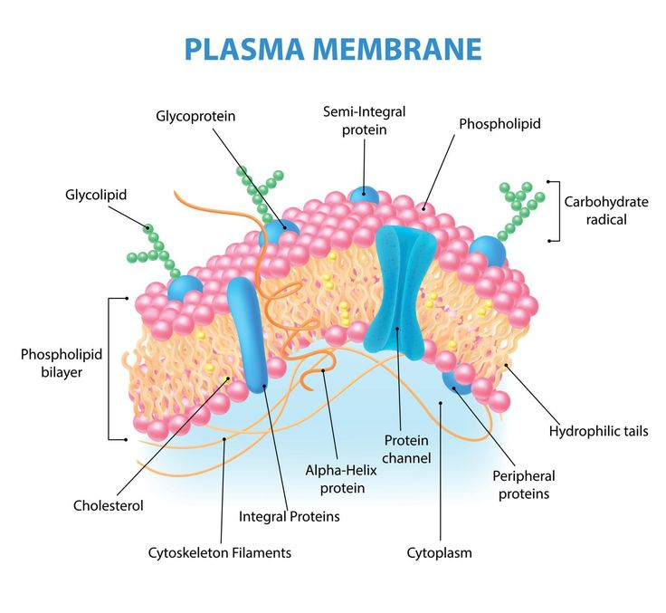

🫧 Plasma Membrane
The living, flexible boundary that surrounds the cell and regulates the movement of substances.
Introduction
The plasma membrane, also called the cell membrane, is a thin, living and flexible covering that surrounds the cytoplasm of every cell. It separates the contents of the cell from the external environment and protects the cell from damage.
Unlike the cell wall, the plasma membrane is present in both plant and animal cells. In plant cells, it lies just inside the cell wall, whereas in animal cells it forms the outermost boundary of the cell.
The plasma membrane is selectively permeable, which means it allows only certain substances to enter or leave the cell while preventing the passage of others. This helps maintain a stable internal environment inside the cell.
The movement of substances across the plasma membrane takes place through processes such as diffusion and osmosis. These processes help the cell obtain nutrients, remove waste products and maintain the correct balance of water and dissolved substances.
Functions of the Plasma Membrane
- Protects the cell and encloses its contents.
- Gives shape to the cell.
- Controls the movement of substances into and out of the cell.
- Maintains the internal environment of the cell.
- Helps in communication between the cell and its surroundings.
📌 Key Points
- The plasma membrane is a thin, living and flexible covering of the cell.
- It is present in both plant and animal cells.
- It is selectively permeable.
- It regulates the movement of substances into and out of the cell.
- Diffusion and osmosis occur through the plasma membrane.
📝 Remember
Cell Wall = Non-living + Freely Permeable
Plasma Membrane = Living + Selectively Permeable
🎯 JKBOSE Exam Point
The following questions are frequently asked in JKBOSE examinations:
- Define plasma membrane.
- Why is the plasma membrane called selectively permeable?
- State any four functions of the plasma membrane.
- Differentiate between cell wall and plasma membrane.
- Name two processes through which substances move across the plasma membrane.

Figure 1.5 — Plasma membrane surrounding the cytoplasm of a cell.
❓ Practice Questions
- What is the plasma membrane?
- Why is it called selectively permeable?
- Write any five functions of the plasma membrane.
- Differentiate between the plasma membrane and the cell wall.
- How does the plasma membrane help maintain the internal environment of the cell?